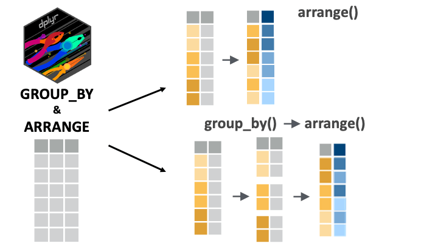
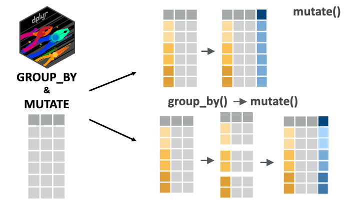
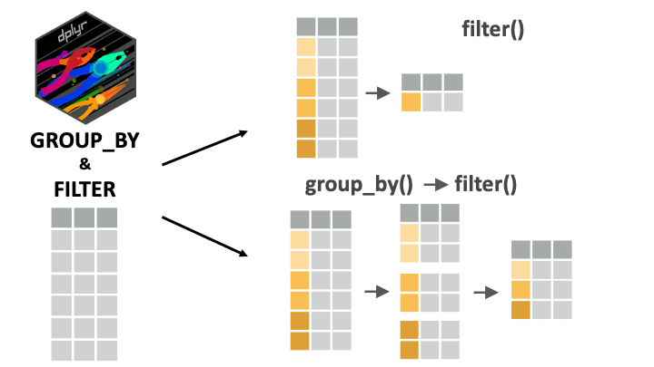

if(!require(pacman)) install.packages("pacman")
pacman::p_load(tidyverse, here)Grouped filter, mutate and arrange
Introduction
Data wrangling often involves applying the same operations separately to different groups within the data. This pattern, sometimes called “split-apply-combine”, is easily accomplished in {dplyr} by chaining the group_by() verb with other wrangling verbs like filter(), mutate(), and arrange() (all of which you have seen before!).
In this lesson, you’ll become confident with these kinds of grouped manipulations.
Let’s get started.
Learning objectives
- You can use
group_by()witharrange(),filter(), andmutate()to conduct grouped operations on a data frame.
Packages
This lesson will require the {tidyverse} suite of packages and the {here} package:
Datasets
In this lesson, we will again use data from the COVID-19 serological survey conducted in Yaounde, Cameroon. Below, we import the data, create a small data frame subset, yao and an even smaller subset, yao_sex_weight.
yao <-
read_csv(here::here('data/yaounde_data.csv')) %>%
select(sex, age, age_category, weight_kg, occupation, igg_result, igm_result)
yao# A tibble: 5 × 7
sex age age_category weight_kg occupation igg_result igm_result
<chr> <dbl> <chr> <dbl> <chr> <chr> <chr>
1 Female 45 45 - 64 95 Informal worker Negative Negative
2 Male 55 45 - 64 96 Salaried worker Positive Negative
3 Male 23 15 - 29 74 Student Negative Negative
4 Female 20 15 - 29 70 Student Positive Negative
5 Female 55 45 - 64 67 Trader--Farmer Positive Negative yao_sex_weight <-
yao %>%
select(sex, weight_kg)
yao_sex_weight# A tibble: 5 × 2
sex weight_kg
<chr> <dbl>
1 Female 95
2 Male 96
3 Male 74
4 Female 70
5 Female 67For practice questions, we will also use the sarcopenia data set that you have seen previously:
sarcopenia <- read_csv(here::here('data/sarcopenia_elderly.csv'))
sarcopenia# A tibble: 5 × 9
number age age_group sex_male_1_female_0 marital_status height_meters
<dbl> <dbl> <chr> <dbl> <chr> <dbl>
1 7 60.8 Sixties 0 married 1.57
2 8 72.3 Seventies 1 married 1.65
3 9 62.6 Sixties 0 married 1.59
4 12 72 Seventies 0 widow 1.47
5 13 60.1 Sixties 0 married 1.55
# ℹ 3 more variables: weight_kg <dbl>, grip_strength_kg <dbl>,
# skeletal_muscle_index <dbl>Arranging by group
The arrange() function orders the rows of a data frame by the values of selected columns. This function is only sensitive to groupings when we set its argument .by_group to TRUE. To illustrate this, consider the yao_sex_weight data frame:
yao_sex_weight# A tibble: 5 × 2
sex weight_kg
<chr> <dbl>
1 Female 95
2 Male 96
3 Male 74
4 Female 70
5 Female 67We can arrange this data frame by weight like so:
yao_sex_weight %>%
arrange(weight_kg)# A tibble: 5 × 2
sex weight_kg
<chr> <dbl>
1 Female 14
2 Male 15
3 Male 15
4 Male 15
5 Female 15As expected, lower weights have been brought to the top of the data frame.
If we first group the data, we might expect a different output:
yao_sex_weight %>%
group_by(sex) %>%
arrange(weight_kg)# A tibble: 5 × 2
# Groups: sex [2]
sex weight_kg
<chr> <dbl>
1 Female 14
2 Male 15
3 Male 15
4 Male 15
5 Female 15But as you see, the arrangement is still the same.
Only when we set the .by_group argument to TRUE do we get something different:
yao_sex_weight %>%
group_by(sex) %>%
arrange(weight_kg, .by_group = TRUE)# A tibble: 5 × 2
# Groups: sex [1]
sex weight_kg
<chr> <dbl>
1 Female 14
2 Female 15
3 Female 16
4 Female 16
5 Female 18Now, the data is first sorted by sex (all women first), and then by weight.
arrange() can group automatically
In reality we do not need group_by() to arrange by group; we can simply put multiple variables in the arrange() function for the same effect.
So this simple arrange() statement:
yao_sex_weight %>%
arrange(sex, weight_kg)# A tibble: 5 × 2
sex weight_kg
<chr> <dbl>
1 Female 14
2 Female 15
3 Female 16
4 Female 16
5 Female 18is equivalent to the more complex group_by(), arrange() statement used before:
yao_sex_weight %>%
group_by(sex) %>%
arrange(weight_kg, .by_group = TRUE)The code arrange(sex, weight_kg) tells R to arrange the rows first by sex, and then by weight.
Obviously, this syntax, with just arrange(), and no group_by() is simpler, so you can stick to it.
desc() for descending order
Recall that to arrange in descending order, we can wrap the target variable in desc(). So, for example, to sort by sex and weight, but with the heaviest people on top, we can run:
yao_sex_weight %>%
arrange(sex, desc(weight_kg))# A tibble: 5 × 2
sex weight_kg
<chr> <dbl>
1 Female 162
2 Female 161
3 Female 158
4 Female 135
5 Female 129
Practice
With an arrange() call, sort the sarcopenia data first by sex and then by grip strength. (If done correctly, the first row should be of a woman with a grip strength of 1.3 kg). To make the arrangement clear, you should first select() the sex and grip strength variables.
## Complete the code with your answer:
Q_grip_strength_arranged <-
sarcopenia %>%
select(______________________________) %>%
arrange(______________________________)
Practice
The sarcopenia dataset contains a column, age_group, which stores age groups as a string (the age groups are “Sixties”, “Seventies” and “Eighties”). Convert this variable to a factor with the levels in the right order (first “Sixties” then “Seventies” and so on). (Hint: Look back on the case_when() lesson if you do not see how to relevel a factor.)
Then, with a nested arrange() call, arrange the data first by the newly-created age_group factor variable (younger individuals first) and then by height_meters, with shorter individuals first.
## Complete the code with your answer:
Q_age_group_height <-
sarcopenia Filtering by group
The filter() function keeps or drops rows based on a condition. If filter() is applied to grouped data, the filtering operation is carried out separately for each group.
To illustrate this, consider again the yao_sex_weight data frame:
yao_sex_weight# A tibble: 5 × 2
sex weight_kg
<chr> <dbl>
1 Female 95
2 Male 96
3 Male 74
4 Female 70
5 Female 67If we want to filter the data for the heaviest person, we could run:
yao_sex_weight %>%
filter(weight_kg == max(weight_kg))# A tibble: 1 × 2
sex weight_kg
<chr> <dbl>
1 Female 162But if we want to get heaviest person per sex group (the heaviest man and the heaviest woman), we can use group_by(sex) then filter():
yao_sex_weight %>%
group_by(sex) %>%
filter(weight_kg == max(weight_kg))# A tibble: 2 × 2
# Groups: sex [2]
sex weight_kg
<chr> <dbl>
1 Male 128
2 Female 162Great! The code above can be translated as “For each sex group, keep the row with the maximum weight_kg value”.
Filtering with nested groupings
filter() will work fine with any number of nested groupings.
For example, if we want to see the heaviest man and heaviest woman per age group we could run the following on the yao data frame:
yao %>%
group_by(sex, age_category) %>%
filter(weight_kg == max(weight_kg))# A tibble: 10 × 7
# Groups: sex, age_category [10]
sex age age_category weight_kg occupation igg_result igm_result
<chr> <dbl> <chr> <dbl> <chr> <chr> <chr>
1 Male 69 65 + 108 Retired Positive Negative
2 Male 37 30 - 44 128 Informal worker Negative Negative
3 Male 26 15 - 29 91 Trader Positive Negative
4 Female 19 15 - 29 109 Student Negative Negative
5 Female 64 45 - 64 158 Retired Negative Negative
6 Female 32 30 - 44 162 Informal worker Positive Negative
7 Male 46 45 - 64 122 Informal worker Negative Negative
8 Female 8 5 - 14 161 Student Negative Positive
9 Female 68 65 + 109 Retired Negative Negative
10 Male 6 5 - 14 99 No response Negative Negative This code groups by sex and age category, and then finds the heaviest person in each sub-category.
(Why do we have 10 rows in the output? Well, 2 sex groups x 5 groups age groups = 10 unique groupings.)
The output is a bit scattered though, so we can chain this with the arrange() function, to arrange by sex and age group.
yao %>%
group_by(sex, age_category) %>%
filter(weight_kg == max(weight_kg)) %>%
arrange(sex, age_category)# A tibble: 10 × 7
# Groups: sex, age_category [10]
sex age age_category weight_kg occupation igg_result igm_result
<chr> <dbl> <chr> <dbl> <chr> <chr> <chr>
1 Female 19 15 - 29 109 Student Negative Negative
2 Female 32 30 - 44 162 Informal worker Positive Negative
3 Female 64 45 - 64 158 Retired Negative Negative
4 Female 8 5 - 14 161 Student Negative Positive
5 Female 68 65 + 109 Retired Negative Negative
6 Male 26 15 - 29 91 Trader Positive Negative
7 Male 37 30 - 44 128 Informal worker Negative Negative
8 Male 46 45 - 64 122 Informal worker Negative Negative
9 Male 6 5 - 14 99 No response Negative Negative
10 Male 69 65 + 108 Retired Positive Negative Now the data is easier to read. All women come first, then men. But we see notice a weird arrangement of the age groups! Those aged 5 to 14 should come first in the arrangement. Of course, we’ve learned how to fix this—the factor() function, and its levels argument:
yao %>%
mutate(age_category = factor(
age_category,
levels = c("5 - 14", "15 - 29", "30 - 44", "45 - 64", "65 +")
)) %>%
group_by(sex, age_category) %>%
filter(weight_kg == max(weight_kg)) %>%
arrange(sex, age_category)# A tibble: 10 × 7
# Groups: sex, age_category [10]
sex age age_category weight_kg occupation igg_result igm_result
<chr> <dbl> <fct> <dbl> <chr> <chr> <chr>
1 Female 8 5 - 14 161 Student Negative Positive
2 Female 19 15 - 29 109 Student Negative Negative
3 Female 32 30 - 44 162 Informal worker Positive Negative
4 Female 64 45 - 64 158 Retired Negative Negative
5 Female 68 65 + 109 Retired Negative Negative
6 Male 6 5 - 14 99 No response Negative Negative
7 Male 26 15 - 29 91 Trader Positive Negative
8 Male 37 30 - 44 128 Informal worker Negative Negative
9 Male 46 45 - 64 122 Informal worker Negative Negative
10 Male 69 65 + 108 Retired Positive Negative Now we have a nice and well-arranged output!
Practice
Group the sarcopenia data frame by age group and sex, then filter for the highest skeletal muscle index in each (nested) group.
## Complete the code with your answer:
Q_max_skeletal_muscle_index <-
sarcopenia Mutating by group
mutate() is used to modify columns or to create new ones. With grouped data, mutate() operates over each group independently.
Let’s first consider a regular mutate() call, not a grouped one. Imagine that you wanted to add a column that ranks respondents by weight. This can be done with the rank() function inside a mutate() call:
yao_sex_weight %>%
mutate(weight_rank = rank(weight_kg))# A tibble: 5 × 3
sex weight_kg weight_rank
<chr> <dbl> <dbl>
1 Female 95 901
2 Male 96 908
3 Male 74 640.
4 Female 70 564.
5 Female 67 502.The output shows that the first row is the 901st lightest individual. But it would be more intuitive to rank in descending order with the heaviest person first. We can do this with the desc() function:
yao_sex_weight %>%
mutate(weight_rank = rank(desc(weight_kg)))# A tibble: 5 × 3
sex weight_kg weight_rank
<chr> <dbl> <dbl>
1 Female 95 71
2 Male 96 64
3 Male 74 332.
4 Female 70 408.
5 Female 67 470.The output shows that the person in the first row is the 71st heaviest individual.
Now, let’s try to write a grouped mutate() call. Imagine we want to add this weight rank column per sex group in the data frame. That is, we want to know each person’s weight rank in their sex category. In this case, we can chain group_by(sex) with mutate():
yao_sex_weight %>%
group_by(sex) %>%
mutate(weight_rank = rank(desc(weight_kg)))# A tibble: 5 × 3
# Groups: sex [2]
sex weight_kg weight_rank
<chr> <dbl> <dbl>
1 Female 95 53.5
2 Male 96 13.5
3 Male 74 148
4 Female 70 220.
5 Female 67 250. Now we see that the person in the first row is the 53rd heaviest woman. (The .5 indicates that this rank is a tie with someone else in the data.)
We could also arrange the data to make things clearer:
yao_sex_weight %>%
group_by(sex) %>%
mutate(weight_rank = rank(desc(weight_kg))) %>%
arrange(sex, weight_rank)# A tibble: 5 × 3
# Groups: sex [1]
sex weight_kg weight_rank
<chr> <dbl> <dbl>
1 Female 162 1
2 Female 161 2
3 Female 158 3
4 Female 135 4
5 Female 129 5Mutating with nested groupings
Of course, as with the other verbs we have seen, mutate() also works with nested groups.
For example, below we create the nested grouping of age and sex with the yao data frame, then add a rank column with mutate():
yao %>%
group_by(sex, age_category) %>%
mutate(weight_rank = rank(desc(weight_kg)))# A tibble: 5 × 8
# Groups: sex, age_category [4]
sex age age_category weight_kg occupation igg_result igm_result
<chr> <dbl> <chr> <dbl> <chr> <chr> <chr>
1 Female 45 45 - 64 95 Informal worker Negative Negative
2 Male 55 45 - 64 96 Salaried worker Positive Negative
3 Male 23 15 - 29 74 Student Negative Negative
4 Female 20 15 - 29 70 Student Positive Negative
5 Female 55 45 - 64 67 Trader--Farmer Positive Negative
# ℹ 1 more variable: weight_rank <dbl>The output shows that the person in the first row is 20th heaviest woman in the 45 to 64 age group.
Practice
With the sarcopenia data, group by age_group, then in a new variable called grip_strength_rank, compute the per-age-group rank of each individual’s grip strength. (To compute the rank, use mutate() and the rank() function with its default ties method.)
## Complete the code with your answer:
Q_rank_grip_strength <-
sarcopenia
Watch Out
Remember to ungroup data before further analysis
As has been mentioned before, it is important ungroup your data before doing further analysis.
Consider this last example, where we computed the weight rank of individuals per age and sex group:
yao %>%
group_by(sex, age_category) %>%
mutate(weight_rank = rank(desc(weight_kg)))# A tibble: 5 × 8
# Groups: sex, age_category [4]
sex age age_category weight_kg occupation igg_result igm_result
<chr> <dbl> <chr> <dbl> <chr> <chr> <chr>
1 Female 45 45 - 64 95 Informal worker Negative Negative
2 Male 55 45 - 64 96 Salaried worker Positive Negative
3 Male 23 15 - 29 74 Student Negative Negative
4 Female 20 15 - 29 70 Student Positive Negative
5 Female 55 45 - 64 67 Trader--Farmer Positive Negative
# ℹ 1 more variable: weight_rank <dbl>If, in the process of analysis, you stored this output as a new data frame:
yao_modified <-
yao %>%
group_by(sex, age_category) %>%
mutate(weight_rank = rank(desc(weight_kg)))And then, later on, you picked up the data frame and tried some other analysis, for example, filtering to get the oldest person in the data:
yao_modified %>%
filter(age == max(age))# A tibble: 5 × 8
# Groups: sex, age_category [5]
sex age age_category weight_kg occupation igg_result igm_result
<chr> <dbl> <chr> <dbl> <chr> <chr> <chr>
1 Male 65 45 - 64 93 Retired Negative Negative
2 Male 78 65 + 95 Retired--Informal w… Positive Negative
3 Male 14 5 - 14 44 Student Negative Negative
4 Female 44 30 - 44 67 Home-maker Positive Negative
5 Female 79 65 + 40 Retired Negative Negative
# ℹ 1 more variable: weight_rank <dbl>You might be confused by the output! Why are there 55 rows of “oldest people”?
This would be because you forgot to ungroup the data before storing it for further analysis. Let’s do this properly now
yao_modified <-
yao %>%
group_by(sex, age_category) %>%
mutate(weight_rank = rank(desc(weight_kg))) %>%
ungroup()Now we can correctly obtain the oldest person/people in the data set:
yao_modified %>%
filter(age == max(age))# A tibble: 2 × 8
sex age age_category weight_kg occupation igg_result igm_result
<chr> <dbl> <chr> <dbl> <chr> <chr> <chr>
1 Female 79 65 + 40 Retired Negative Negative
2 Female 79 65 + 81 Home-maker Negative Negative
# ℹ 1 more variable: weight_rank <dbl>Wrap up
group_by() is a marvelous tool for arranging, mutating, filtering based on the groups within a single or multiple variables.



There are numerous ways of combining these verbs to manipulate your data. We invite you to take some time and to try these verbs out in different combinations!
See you next time!
References
Some material in this lesson was adapted from the following sources:
Horst, A. (2022). Dplyr-learnr. https://github.com/allisonhorst/dplyr-learnr (Original work published 2020)
Group by one or more variables. (n.d.). Retrieved 21 February 2022, from https://dplyr.tidyverse.org/reference/group_by.html
Create, modify, and delete columns — Mutate. (n.d.). Retrieved 21 February 2022, from https://dplyr.tidyverse.org/reference/mutate.html
Subset rows using column values — Filter. (n.d.). Retrieved 21 February 2022, from https://dplyr.tidyverse.org/reference/filter.html
Arrange rows by column values — Arrange. (n.d.). Retrieved 21 February 2022, from https://dplyr.tidyverse.org/reference/arrange.html
Artwork was adapted from:
- Horst, A. (2022). R & stats illustrations by Allison Horst. https://github.com/allisonhorst/stats-illustrations (Original work published 2018)
Solutions
.SOLUTION_Q_grip_strength_arranged()
Q_grip_strength_arranged <-
sarcopenia %>%
select(sex_male_1_female_0, grip_strength_kg) %>%
arrange(sex_male_1_female_0, grip_strength_kg).SOLUTION_Q_age_group_height()
Q_age_group_height <-
sarcopenia %>%
mutate(age_group = factor(age_group, levels = c("Sixties",
"Seventies",
"Eighties"))) %>%
arrange(age_group, height_meters).SOLUTION_Q_max_skeletal_muscle_index()
Q_max_skeletal_muscle_index <-
sarcopenia %>%
group_by(age_group,sex_male_1_female_0) %>%
filter(skeletal_muscle_index == max(skeletal_muscle_index)).SOLUTION_Q_rank_grip_strength()
Q_rank_grip_strength <-
sarcopenia %>%
group_by(age_group) %>%
mutate(grip_strength_rank = rank(grip_strength_kg))